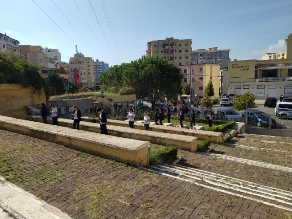
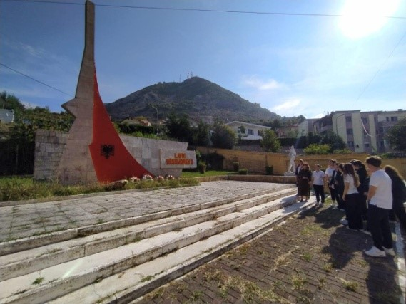
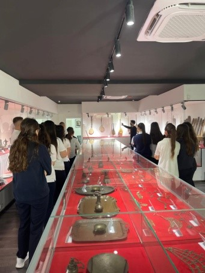
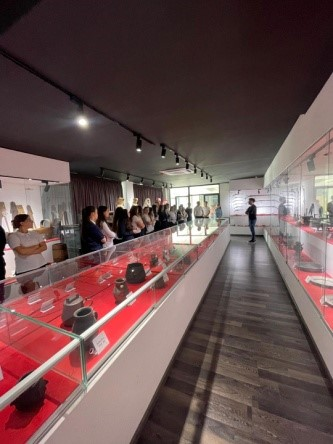
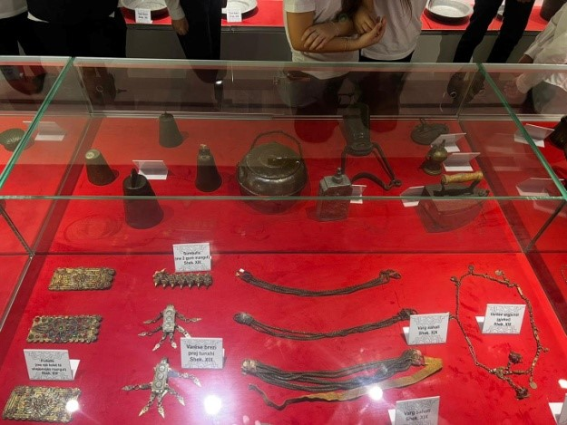
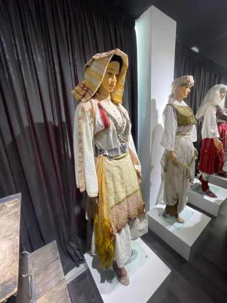

Aktivitete
Shtëpi
Intervista
Krijimtari
Shko në Fund↓
Eksploro➔
AKTIVITETET E MUAJIT
➔ Vizitë me grupin e historisë në Varrezat e Dëshmorëve të qytetit të Lezhës në 80-vjetorin e çlirimit të atdheut!
 
➔ Vizitë në Muzeun Etnografik të qytetit për t’u njohur me trashëgiminë historike në periudha të ndryshme të historisë.
   
➔ Bisedë letrare: Gjergj Fishta dhe At'Zef Pllumi- Apostuj të kulturës shqiptare !
Eksploro➔
Kthim në Krye